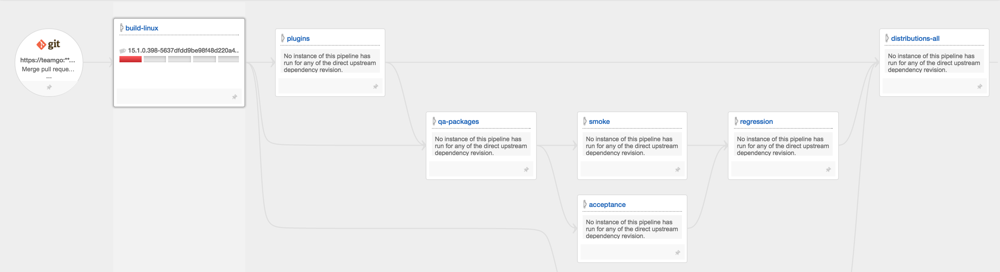
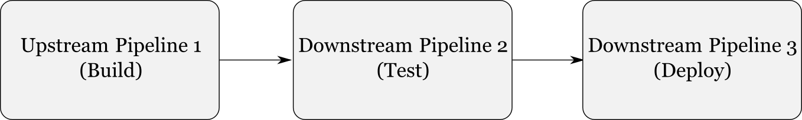
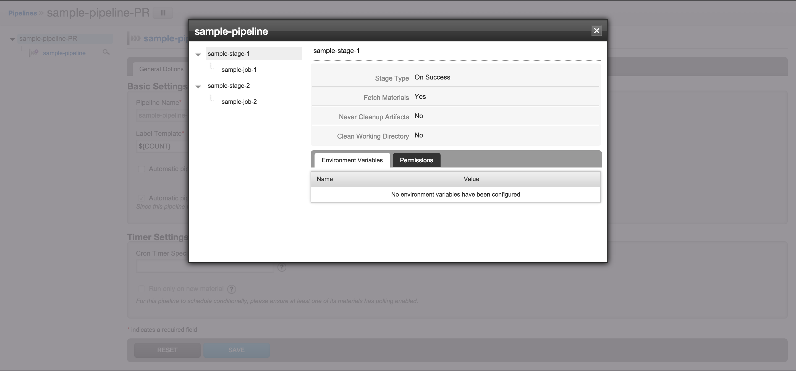
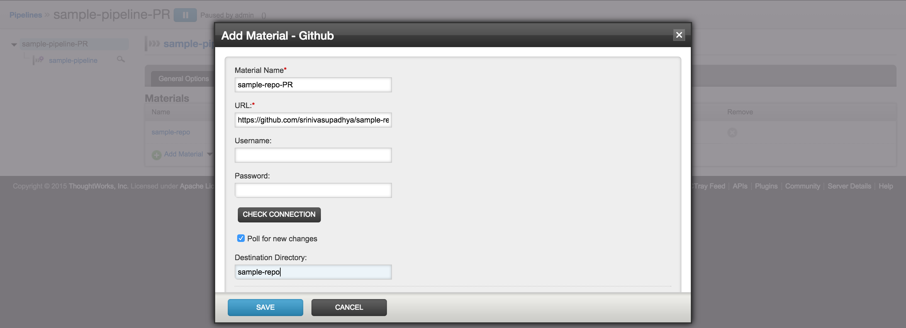

GoCD 15.1 introduced support for writing material repository plugins, to extend the kind of source code material
repositories that GoCD works with. This resulted in community-driven plugins developed for GoCD, to implement support for
feature branches, with help from members of GoCD's core contributors. This blog post has information specifically about
GitHub Pull Request support.
Note: In this post, the terms Branch and Pull Request are used interchangeably, since a Pull Request is
essentially just a branch.
As codebases grow and teams start writing more tests, they often hit upon a challenging problem. If they have setup
their build, test and deploy pipelines as a normal team or teams working with trunk-based development would have, then
increasing the number of tests they have results in a longer time to certify a build and deploy to production.
Here is an example of a Value Stream Map from GoCD itself: See https://build.go.cd (Username: view, Password: password) itself,
where running all the tests and generating installers can take hours:
Figure 1: GoCD - Value Stream Map (Click to enlarge)
Due to this, it becomes critical to keep the main Value Stream green all the time. A failed build would mean all other
commits ready to go in have to wait until the failed build is fixed:

Figure 2: Failed build stops everything (Click to enlarge)
The root of this problem is a slow build, and sometimes that can be tackled directly. However, with the advent of
short-lived feature branches (aka, Pull Requests in GitHub land), this problem can become worse. Since feature
branches are not regularly verified before merging, merging them could itself be a little risky, and could cause the
build to fail un-necessarily.
In general, development workflows in organizations has moved to something which looks like:
Now, whether a feature branch based workflow is the best approach or not is hotly debated (see Martin Fowler's
article on this). Organizations who follow a feature branch based
workflow have been wanting support for it in GoCD. Historically, GoCD has advocated against feature
branches and support
for it has been limited. GoCD users have come up with some innovative work arounds, like this one from Vision
Critical.
Though the GoCD core contribution team continues to be wary of long-lived feature branches, short-lived feature branches
create a window for validating changes before they are merged into the main branch. Since the majority of time spent in
a CI/CD setup tends to be in running tests, and failed builds are typically due to test failures, you could run tests on
a proposed change in a feature branch, get feedback about it and fix tests if needed, before merging it into the trunk.
Though this does not always catch integration issues (that depends on what else was merged before this one was), it
allows you to increase the chances of your main Value Stream staying green and in a deployable state for longer.
A problem with this approach though, is that every change will be tested twice (once on the feature branch and once on
the main branch after the merge) which means the effective time for a commit to reach production could be more, unless
you have more hardware (agents) to run branch builds.
The way forward
Assuming you have chosen the approach mentioned above, you can now use GoCD 15.1, with its two new extension points - SCM
end-point and the Notification
end-point, to test feature
branches before they are merged.
To use this with GitHub requires the use of two community-driven and community-supported plugins: Git Branch Poller
Plugin and the Build Status Notification
Plugin. The first one is an SCM Material plugin, and is
responsible for polling a configured repository for changes, while the second one is a Notification plugin, which is
responsible for notifying GitHub about the suitability of a Pull Request for merging.
Note: Even though this post specifically mentions GitHub only, plugins have been written to work with plain Git,
Atlassian Stash, Gerrit and more! See the GoCD community plugins
page for more information.
Decide which parts of the value stream you want the Pull Requests to run till, and extract a template for those
pipelines, so that you can have a parallel set of pipelines to run against Pull Requests. The need to create a
separate set of pipelines is to make sure that the main build and the branch build never get interleaved, and a branch
build never gets deployed into production, by mistake.
Your decision should be based on how much of your tests can reasonably be run for every Pull Request, and how far down
the Value Stream can a build containing those changes GoCD. For some, every test in the system needs to run before it is
deemed merge-able and for some, only unit and integration tests might be enough. It depends.
Suppose you have a setup of three pipelines like this:

Figure 4: Example setup (Click to enlarge)
and you decide that you want the first two pipelines to run for every Pull Request, you need to change your pipelines
to look like this:
Figure 5: Extract templates, create pipelines for PR (Click to enlarge)
Based on your decision, extract templates and create the new pipelines:

Figure 6: Extract template (Click to enlarge)
In the new pipeline or pipelines that have been setup to run for every Pull Request, change the Git material to use
the GitHub material (this material is provided by the GitHub poller plugin installed earlier):
Figure 7: Add GitHub material (Click to enlarge)

Figure 8: Add GitHub material - Details (Click to enlarge)
Once you have setup the GitHub material for the pipeline, you can remove the Git material from that pipeline.
That's it.
Results
GoCD will trigger builds for every new Pull Request and for new commits to existing Pull Requests:
Figure 9: PR triggers build (Click to enlarge)
GoCD will update Pull Request in GitHub with the build status:
If multiple branches are updated at once, the plugin provides all of them as changes and GoCD will not run the pipeline
for every change separately. GoCD currently combines multiple changes into a single pipeline run (to save time). A
feature allowing "force trigger pipeline for each change" should be able to
overcome this. This has not yet been accepted into the main GoCD codebase.
If there are multiple commits in a branch, the plugin only returns the top commit as a change. Hence only one change
shows up in the dashboard, value stream, etc. Also, since GoCD does not know about the other changes you will not be
able to manually trigger a pipeline with the other commits.
The UI is lacking in certain areas: For instance, it is not possible to add an SCM plugin material during pipeline
creation, to associate an existing SCM to a pipeline you will need to edit Config XML etc. These
will be fixed in upcoming releases.
References
Some discussions on the GoCD mailing lists and on GitHub about this: